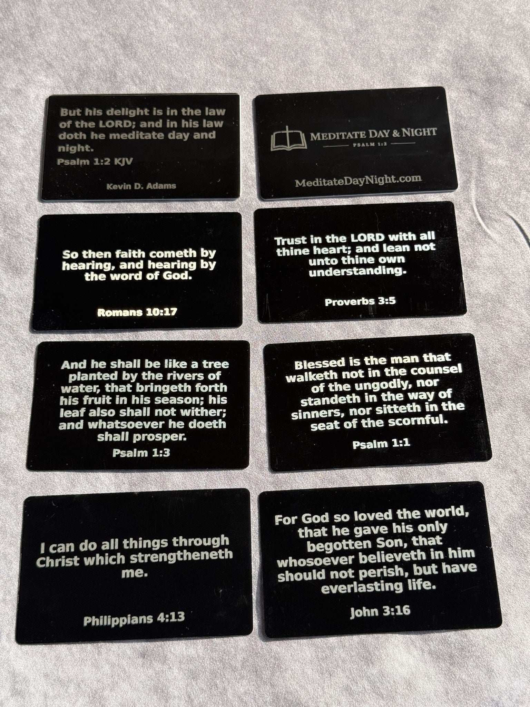
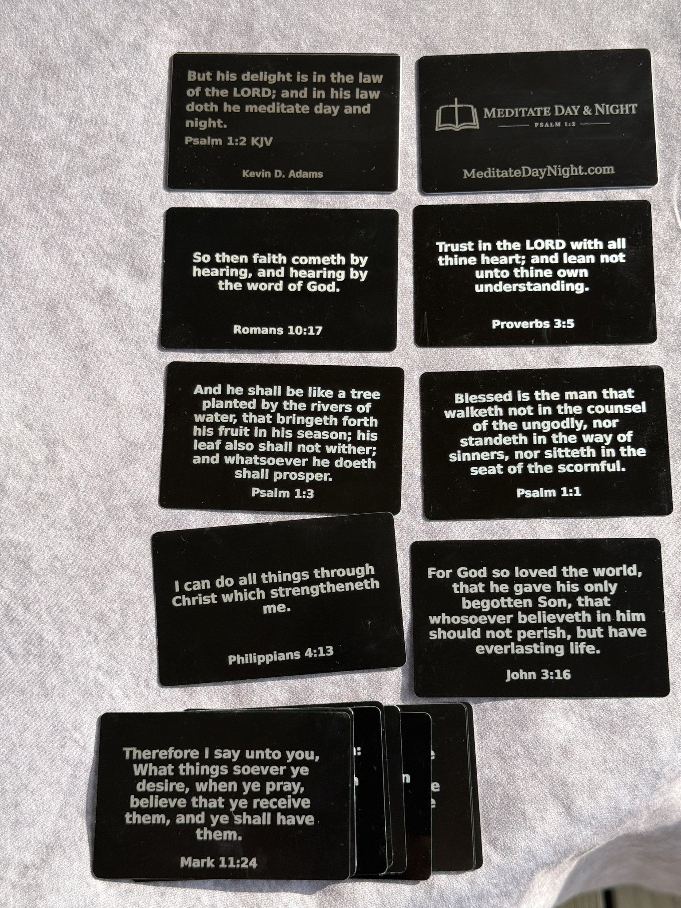

Scripture Wallet
Currently given away freeCarry the Word with you, wherever the day leads.
The Scripture Wallet is a pocket-sized home for God's Word, made to slip into your pocket, purse, or bag so Scripture is always close at hand.
Built to last
- Front plate: laser-engraved with Psalm 1:2 (KJV): “But his delight is in the law of the LORD; and in his law doth he meditate day and night.”
- Back plate: the Meditate Day & Night logo with an open Bible and cross, plus MeditateDayNight.com.
- Two 0.8 mm black anodized aluminum outer plates, durable and sleek.
- A thick silicone band holds everything together securely.
Scripture cards
Between the plates sits a stack of thin, double-sided, laser-engraved King James Version scripture cards, with verses such as Romans 10:17, Proverbs 3:5, Psalm 1:1, Psalm 1:3, Philippians 4:13, John 3:16, and Mark 11:24.
Each card is credit-card size (about 86 x 54 mm), so you can pull one out for a moment of reading, prayer, or memorization, or share it with someone who needs encouragement.
Request oneGallery


